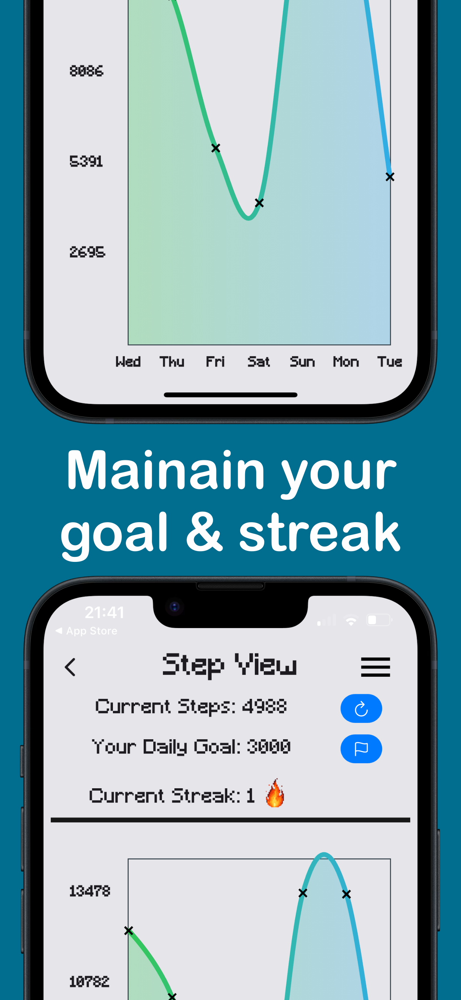
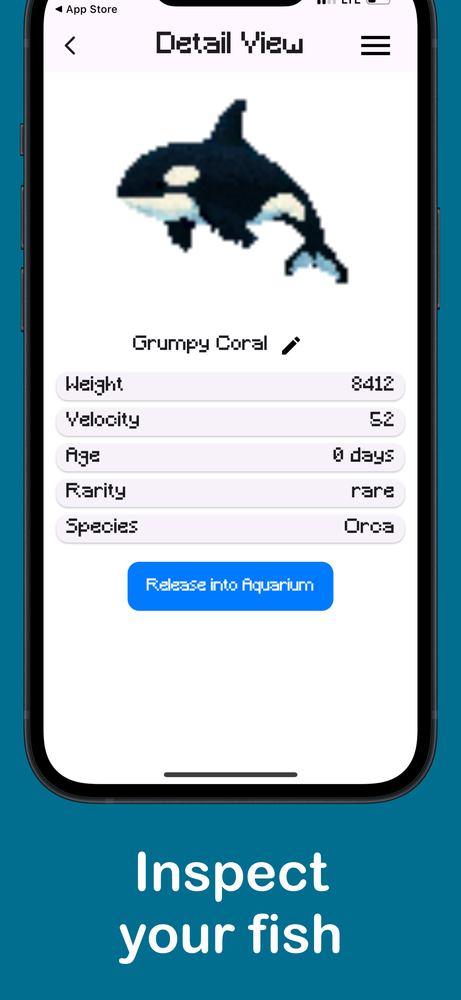
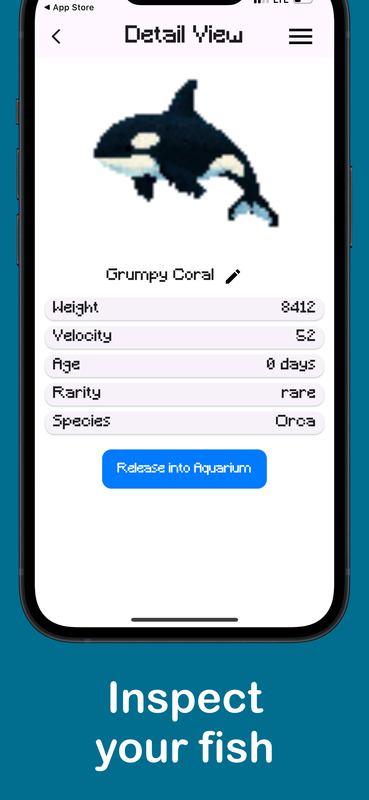
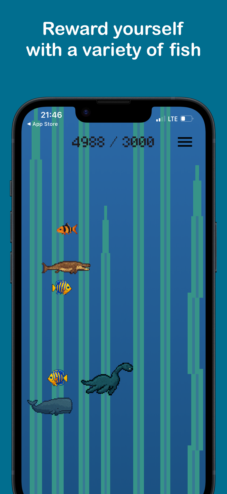
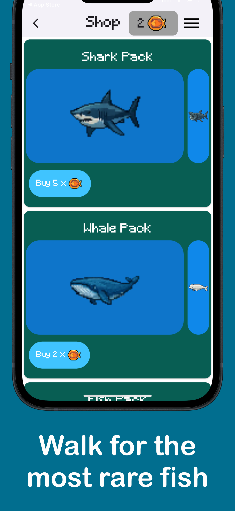
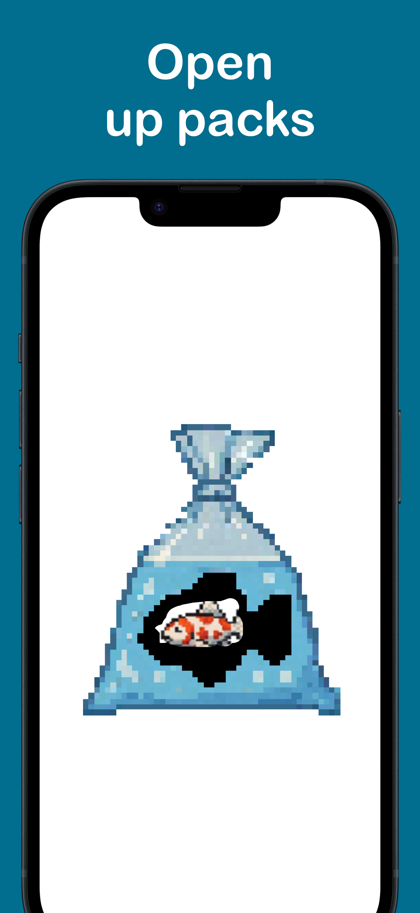

Overview

This app is all about increasing your steps.


For this reason you can set your own daily goal so you do not get demotivated.
Reward youself with interesting fish species, ranging from normal fish to water dinosaurs.
 



